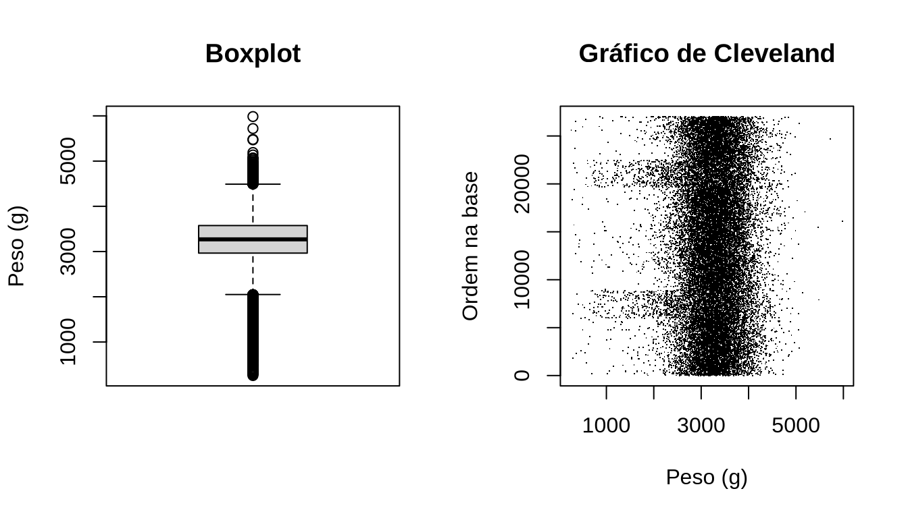
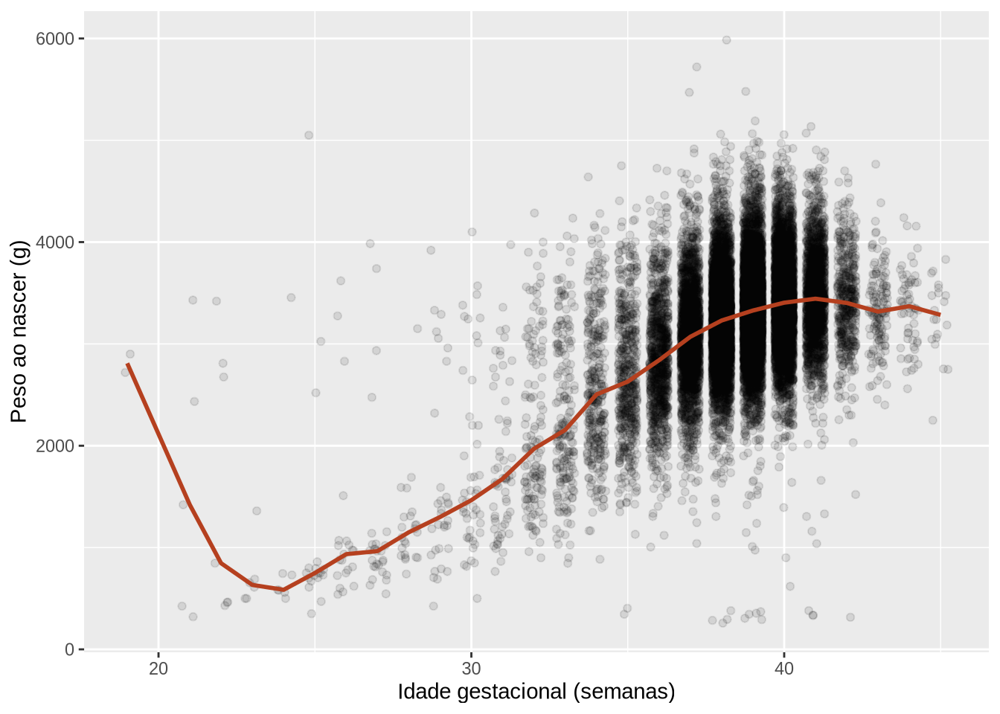
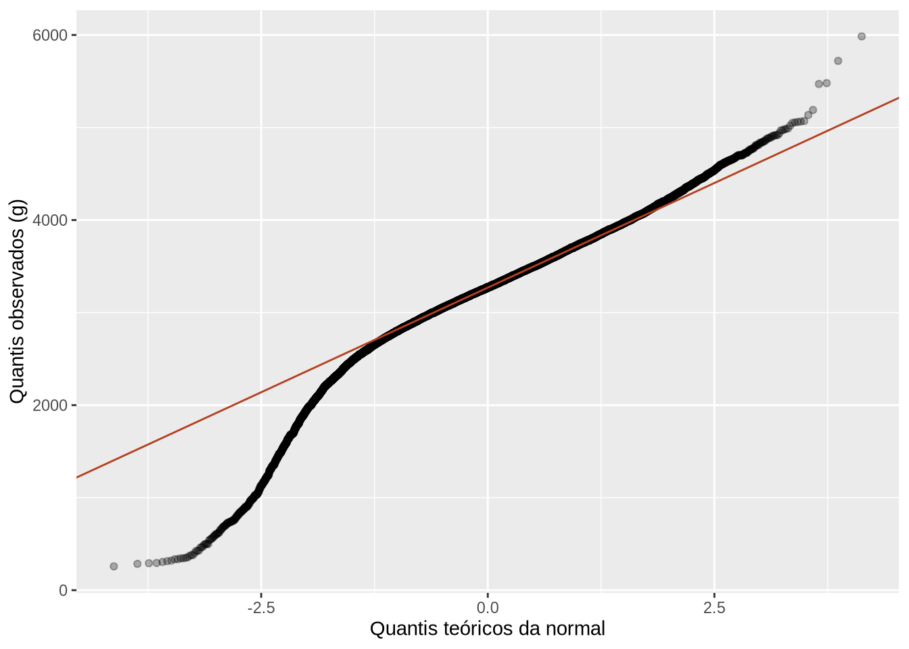
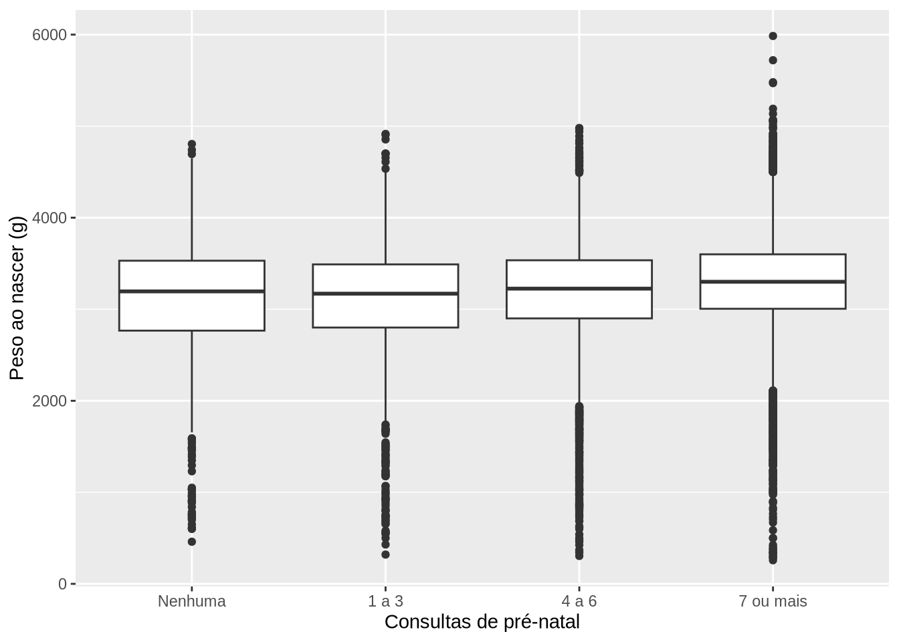
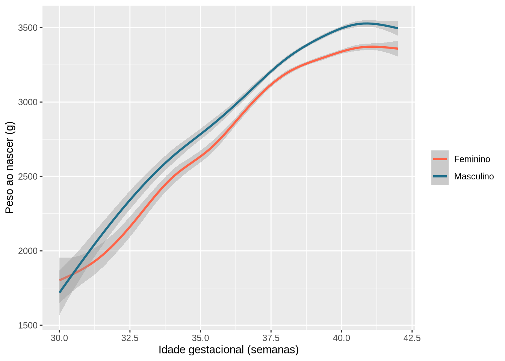
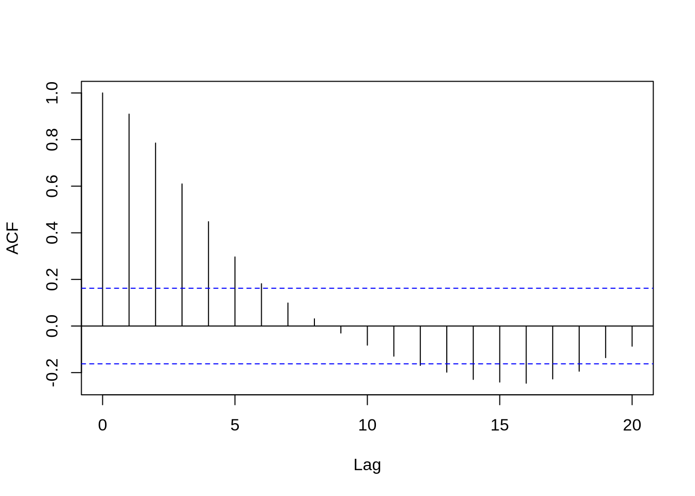

library(tidyverse)
library(here)
source(here("scripts", "preparar-sinasc.R"))
covid <- read_csv(here("dados", "covid_norte_2020_2022.csv"))12 Análise exploratória de dados: um protocolo
Pré-requisitos: Capítulo 10 e Capítulo 11 · Pacotes: ggplot2, dplyr, janitor, skimr, GGally, here; R base (graphics, stats)
Objetivos de aprendizagem
Ao final deste capítulo, espera-se que o estudante seja capaz de explicar o papel da análise exploratória antes da aplicação de testes e modelos; aplicar, de forma sistemática, um protocolo que examina valores extremos, homogeneidade de variâncias, forma das distribuições, excesso de zeros, colinearidade, relações entre variáveis, interações e dependência entre observações; avaliar a qualidade de dados dos sistemas de informação em saúde quanto a completude, consistência, duplicidades e valores implausíveis; e documentar as decisões tomadas durante a exploração.
Os capítulos anteriores apresentaram as ferramentas para descrever e visualizar dados. Este capítulo as organiza em um roteiro de trabalho. A ideia é simples: antes de aplicar um teste estatístico ou ajustar um modelo, vale a pena olhar os dados de forma sistemática, procurando problemas que poderiam levar a conclusões erradas. Um valor de peso digitado errado, uma variável com muitos zeros ou observações que não são independentes entre si podem invalidar uma análise que, no papel, parecia correta.
12.1 O que é a análise exploratória e por que fazê-la
A análise exploratória de dados é a etapa em que conhecemos a estrutura dos dados, verificamos sua qualidade e formulamos perguntas. Ela não tem o objetivo de confirmar hipóteses, e sim de evitar surpresas. Em pesquisa, a exploração orienta a escolha dos métodos: uma variável muito assimétrica pode pedir uma transformação ou um teste não paramétrico; uma relação curva pode pedir um modelo diferente da reta. Em serviços de saúde, ela é a forma de detectar erros de registro antes que eles cheguem a um boletim ou a um painel de indicadores.
Há um cuidado a tomar. A exploração não deve se transformar em uma busca por resultados interessantes, testando dezenas de comparações até encontrar alguma significativa. As decisões tomadas na exploração devem ser registradas e justificadas, e as hipóteses principais de um estudo devem ser definidas antes de olhar os dados.
12.2 Um protocolo para exploração de dados
ZUUR; IENO; ELPHICK (2010) propuseram um protocolo de oito etapas para explorar dados antes de aplicar métodos estatísticos. Embora tenha sido escrito para a ecologia, ele se aplica muito bem aos dados de saúde, e por isso integra a bibliografia da disciplina. As etapas estão resumidas na Tabela 12.1.
| Etapa | Pergunta | Ferramentas principais |
|---|---|---|
| 1. Valores extremos | Há valores muito distantes dos demais, na variável resposta ou nas explicativas? | Boxplot, gráfico de pontos de Cleveland |
| 2. Homogeneidade | A variabilidade da resposta é parecida entre os grupos? | Boxplots condicionais |
| 3. Normalidade | A distribuição tem a forma que o método supõe? | Histograma, gráfico quantil-quantil |
| 4. Excesso de zeros | Há mais zeros do que o esperado em uma contagem? | Tabela ou gráfico de frequências |
| 5. Colinearidade | As variáveis explicativas estão fortemente relacionadas entre si? | Matriz de dispersão, correlações |
| 6. Relações | Qual a forma da relação entre a resposta e as explicativas? | Gráficos de dispersão, boxplots |
| 7. Interações | A relação entre duas variáveis muda conforme uma terceira? | Gráficos condicionais, facetas |
| 8. Independência | As observações são independentes entre si? | Gráficos ao longo do tempo ou do espaço, autocorrelação |
Neste capítulo, vamos aplicar o protocolo à pergunta que guiará os capítulos de inferência: como o peso ao nascer se relaciona com a idade gestacional, a idade da mãe, o pré-natal e o tipo de parto? A resposta é o peso ao nascer, e as variáveis explicativas são as demais.
Antes de começar, um panorama geral ajuda. A função skim(), do pacote skimr, resume todas as variáveis de uma base em uma única saída, com ausentes, medidas resumo e pequenos histogramas.
nascidos |>
select(peso, semagestac, idademae, apgar5, parto, consultas_cat) |>
skimr::skim()| Name | select(nascidos, peso, se… |
| Number of rows | 27028 |
| Number of columns | 6 |
| _______________________ | |
| Column type frequency: | |
| factor | 2 |
| numeric | 4 |
| ________________________ | |
| Group variables | None |
Variable type: factor
| skim_variable | n_missing | complete_rate | ordered | n_unique | top_counts |
|---|---|---|---|---|---|
| parto | 49 | 1 | FALSE | 2 | Ces: 18036, Vag: 8943 |
| consultas_cat | 51 | 1 | FALSE | 4 | 7 o: 18624, 4 a: 5988, 1 a: 1379, Nen: 986 |
Variable type: numeric
| skim_variable | n_missing | complete_rate | mean | sd | p0 | p25 | p50 | p75 | p100 | hist |
|---|---|---|---|---|---|---|---|---|---|---|
| peso | 0 | 1.00 | 3243.19 | 544.75 | 258 | 2965 | 3270 | 3575 | 5985 | ▁▁▇▂▁ |
| semagestac | 1238 | 0.95 | 38.57 | 2.02 | 19 | 38 | 39 | 40 | 45 | ▁▁▁▇▃ |
| idademae | 0 | 1.00 | 26.09 | 6.39 | 11 | 21 | 26 | 31 | 53 | ▃▇▆▁▁ |
| apgar5 | 103 | 1.00 | 9.18 | 0.79 | 0 | 9 | 9 | 10 | 10 | ▁▁▁▁▇ |
12.3 Valores extremos e implausíveis
Valores extremos são observações muito distantes das demais. Eles podem ser valores reais, como o peso de um recém-nascido extremamente prematuro, ou erros, como um peso digitado com um zero a mais. A distinção importa: valores reais devem ser mantidos e, se necessário, tratados com métodos adequados; erros devem ser corrigidos ou excluídos, com registro da decisão.
O boxplot marca como pontos isolados as observações além das hastes. O gráfico de pontos de Cleveland mostra o valor de cada observação no eixo horizontal e a sua posição na base no eixo vertical, o que facilita perceber valores que destoam dos demais. No R base, a função dotchart() faz esse gráfico, mas, com bases grandes como a nossa, é mais simples obter o mesmo resultado com plot(), colocando no eixo vertical a sequência de 1 até o número de linhas.
par(mfrow = c(1, 2))
boxplot(nascidos$peso, main = "Boxplot", ylab = "Peso (g)")
plot(nascidos$peso, seq_along(nascidos$peso), main = "Gráfico de Cleveland",
xlab = "Peso (g)", ylab = "Ordem na base", pch = ".")
par(mfrow = c(1, 1))
Em uma base grande, o boxplot marca muitos pontos como extremos, porque, com milhares de observações, sempre haverá valores nas caudas. O gráfico de Cleveland mostra que esses valores formam um contínuo, sem pontos completamente separados dos demais, o que sugere que não há erros grosseiros de digitação.
Uma verificação mais eficiente é a plausibilidade conjunta: o peso faz sentido para a idade gestacional? Um recém-nascido de 4.000 gramas com 26 semanas de gestação, por exemplo, é praticamente impossível.
nascidos |>
filter(!is.na(semagestac)) |>
group_by(semagestac) |>
summarise(n = n(), peso_min = min(peso), peso_mediano = median(peso), peso_max = max(peso)) |>
filter(semagestac < 30)
#> # A tibble: 10 × 5
#> semagestac n peso_min peso_mediano peso_max
#> <dbl> <int> <dbl> <dbl> <dbl>
#> 1 19 2 2720 2810 2900
#> 2 21 5 320 1420 3430
#> 3 22 7 430 846 3420
#> 4 23 6 500 632. 1360
#> 5 24 7 500 585 3455
#> 6 25 18 350 750 5050
#> 7 26 21 540 935 3620
#> 8 27 27 545 965 3985
#> 9 28 23 740 1150 3150
#> 10 29 32 425 1300 3920ggplot(nascidos, aes(x = semagestac, y = peso)) +
geom_jitter(alpha = 0.1, width = 0.3) +
stat_summary(fun = median, geom = "line", color = "#b5401f", linewidth = 1) +
labs(x = "Idade gestacional (semanas)", y = "Peso ao nascer (g)")
Repare que a linha da mediana sobe nas semanas iniciais, puxada por alguns pontos com peso alto em idades gestacionais muito baixas. Esses registros são inconsistentes. É mais provável que o erro esteja na idade gestacional, cuja estimativa é mais difícil, do que no peso, medido em balança. Uma decisão possível, comum em estudos com dados do SINASC, é considerar a idade gestacional como ausente nesses registros, mantendo o peso. Vamos identificar quantos registros seriam afetados, usando como critério um peso acima de 2.500 gramas com menos de 28 semanas.
nascidos |>
filter(semagestac < 28, peso > 2500) |>
select(semagestac, gestacao, peso)
#> # A tibble: 16 × 3
#> semagestac gestacao peso
#> <dbl> <chr> <dbl>
#> 1 22 22 a 27 semanas 2810
#> 2 25 22 a 27 semanas 5050
#> 3 26 22 a 27 semanas 3275
#> 4 22 22 a 27 semanas 3420
#> 5 25 22 a 27 semanas 3025
#> 6 26 22 a 27 semanas 2830
#> 7 27 22 a 27 semanas 2934
#> 8 27 22 a 27 semanas 3740
#> 9 24 22 a 27 semanas 3455
#> 10 19 Menos de 22 semanas 2900
#> 11 27 22 a 27 semanas 3985
#> 12 21 Menos de 22 semanas 3430
#> 13 19 Menos de 22 semanas 2720
#> 14 25 22 a 27 semanas 2520
#> 15 26 22 a 27 semanas 3620
#> 16 22 22 a 27 semanas 2675São 16 registros. Repare que a faixa de idade gestacional (gestacao) concorda com as semanas em todos eles, o que indica que as duas variáveis vêm da mesma informação e, portanto, a faixa não ajuda a decidir qual dos dois valores está errado. São poucos registros, que não afetam as análises descritivas, mas poderiam distorcer uma análise da relação entre peso e idade gestacional nas semanas iniciais.
12.4 Forma das distribuições e homogeneidade de variâncias
Muitos procedimentos estatísticos, como o teste t e a regressão linear, que veremos nos próximos capítulos, supõem que os dados (ou, mais precisamente, os resíduos do modelo) seguem uma distribuição aproximadamente normal e que a variabilidade é parecida entre os grupos comparados. A exploração verifica se essas suposições são razoáveis.
O gráfico quantil-quantil (Q-Q plot) compara os quantis dos dados com os quantis de uma distribuição normal. Se os dados forem aproximadamente normais, os pontos ficam sobre uma reta. Desvios sistemáticos nas pontas indicam caudas mais pesadas ou mais leves que as da normal.
ggplot(nascidos, aes(sample = peso)) +
geom_qq(alpha = 0.3) +
geom_qq_line(color = "#b5401f") +
labs(x = "Quantis teóricos da normal", y = "Quantis observados (g)")
Na parte central, os pontos seguem a reta, mas na extremidade esquerda eles caem abaixo dela, indicando uma cauda inferior mais longa: há mais recém-nascidos muito leves do que uma distribuição normal preveria. Isso era de se esperar, já que os prematuros formam um grupo à parte.
Os testes formais de normalidade, como o de Shapiro-Wilk (shapiro.test()), devem ser usados com cautela. Com amostras grandes, eles rejeitam a normalidade por desvios mínimos, sem importância prática; com amostras pequenas, deixam de detectar desvios importantes. Por isso, os gráficos são, em geral, mais informativos. Além disso, a função shapiro.test() do R só aceita até 5 mil observações.
A homogeneidade de variâncias é examinada com boxplots da resposta para cada grupo. Caixas de alturas muito diferentes indicam variâncias diferentes.
nascidos |>
filter(!is.na(consultas_cat)) |>
ggplot(aes(x = consultas_cat, y = peso)) +
geom_boxplot() +
labs(x = "Consultas de pré-natal", y = "Peso ao nascer (g)")
nascidos |>
group_by(consultas_cat) |>
summarise(desvio_padrao = sd(peso), iiq = IQR(peso))
#> # A tibble: 5 × 3
#> consultas_cat desvio_padrao iiq
#> <fct> <dbl> <dbl>
#> 1 Nenhuma 701. 764.
#> 2 1 a 3 684. 690
#> 3 4 a 6 592. 635
#> 4 7 ou mais 499. 595
#> 5 <NA> 686. 762.
A variabilidade do peso é maior entre os filhos de mães com poucas consultas, provavelmente porque esses grupos concentram mais prematuros. Essa informação será importante ao escolher entre as versões do teste de comparação de médias, no Capítulo 13.
12.5 Excesso de zeros, colinearidade e relações entre variáveis
O excesso de zeros é um problema típico de contagens, como o número de casos de uma doença por semana em municípios pequenos. Muitos métodos para contagens supõem uma certa proporção de zeros, e um excesso deles pede métodos específicos. Na série de COVID-19, a proporção de dias com zero casos novos varia bastante entre os estados, o que reflete, em boa parte, diferenças na rotina de divulgação dos dados.
covid |>
group_by(uf) |>
summarise(dias = n(), dias_com_zero = sum(casos_novos == 0),
perc_zeros = mean(casos_novos == 0) * 100)
#> # A tibble: 7 × 4
#> uf dias dias_com_zero perc_zeros
#> <chr> <int> <int> <dbl>
#> 1 AC 1020 132 12.9
#> 2 AM 1024 10 0.977
#> 3 AP 1017 57 5.60
#> 4 PA 1019 12 1.18
#> 5 RO 1017 52 5.11
#> 6 RR 1016 144 14.2
#> 7 TO 1019 210 20.6Parte desses zeros não significa ausência de casos, e sim ausência de notificação naquele dia, como em fins de semana e feriados. Agregar os dados por semana, como fizemos no Capítulo 9, reduz esse problema.
A colinearidade ocorre quando duas variáveis explicativas estão fortemente relacionadas entre si, o que dificulta separar o efeito de cada uma. A matriz de dispersão e a matriz de correlações ajudam a identificá-la.
nascidos |>
select(peso, semagestac, idademae, apgar5, consultas) |>
cor(use = "complete.obs") |>
round(2)
#> peso semagestac idademae apgar5 consultas
#> peso 1.00 0.47 0.05 0.16 0.12
#> semagestac 0.47 1.00 -0.06 0.19 0.14
#> idademae 0.05 -0.06 1.00 0.02 0.07
#> apgar5 0.16 0.19 0.02 1.00 0.07
#> consultas 0.12 0.14 0.07 0.07 1.00O argumento use = "complete.obs" faz o cálculo apenas com os registros sem ausentes em nenhuma das variáveis. Nenhuma correlação entre variáveis explicativas é muito alta (acima de 0,7 ou 0,8, como se costuma considerar), o que indica que a colinearidade não é um problema aqui. A correlação mais forte é entre o peso e a idade gestacional, que são, respectivamente, a resposta e uma explicativa.
A forma das relações entre a resposta e as explicativas foi vista no gráfico de dispersão da seção anterior: a relação entre peso e idade gestacional não é uma reta, e sim uma curva que cresce e depois se estabiliza. Essa informação será importante na regressão linear, no Capítulo 14.
12.6 Interações e independência
Há interação quando a relação entre duas variáveis muda conforme o valor de uma terceira. Os gráficos com facetas, ou com cores para uma terceira variável, permitem explorar essa possibilidade.
nascidos |>
filter(!is.na(sexo), between(semagestac, 30, 42)) |>
ggplot(aes(x = semagestac, y = peso, color = sexo)) +
geom_smooth() +
scale_color_manual(values = c(Feminino = "#ff6347", Masculino = "#1f6f8b")) +
labs(x = "Idade gestacional (semanas)", y = "Peso ao nascer (g)", color = NULL)
As curvas têm a mesma forma, com os meninos um pouco mais pesados em quase toda a faixa. A diferença aumenta um pouco nas semanas finais, mas é pequena diante da variação do peso ao longo da gestação. Isso sugere que o sexo desloca a curva sem mudar muito sua forma, ou seja, não há indício forte de interação.
A independência das observações é uma suposição de quase todos os métodos estatísticos básicos. Ela é violada quando as observações estão agrupadas (nascimentos de um mesmo hospital, gêmeos de uma mesma gestação) ou ordenadas no tempo ou no espaço (casos em semanas consecutivas, municípios vizinhos). Em séries temporais, o valor de uma semana depende fortemente do valor da semana anterior, o que pode ser visto com a função de autocorrelação, acf().
casos_semanais_ro <- covid |>
filter(uf == "RO") |>
mutate(semana = floor_date(data, "week", week_start = 7)) |>
group_by(semana) |>
summarise(casos = sum(casos_novos))
acf(casos_semanais_ro$casos, lag.max = 20, main = "")
As autocorrelações altas nas primeiras defasagens mostram que semanas próximas têm valores parecidos, ou seja, as semanas não são independentes. As autocorrelações negativas em defasagens maiores refletem as ondas da epidemia, já que semanas de pico tendem a estar distantes de semanas de vale. Análises de séries temporais exigem métodos próprios, que estão além deste livro. O importante, aqui, é reconhecer quando a suposição de independência não se sustenta, para não aplicar um teste que a exige.
12.7 Qualidade dos dados dos sistemas de informação
Nos dados dos sistemas de informação em saúde, a exploração inclui uma avaliação de qualidade com quatro dimensões principais. A completude é a proporção de campos preenchidos, calculada no Capítulo 9. A consistência é a coerência entre variáveis relacionadas, como o peso e a idade gestacional, ou a idade gestacional em semanas e em faixas. A unicidade é a ausência de registros duplicados. A plausibilidade é a ocorrência de valores dentro de limites possíveis.
A consistência entre a idade gestacional em semanas e em faixas pode ser verificada cruzando as duas variáveis.
nascidos |>
filter(!is.na(semagestac), !is.na(gestacao)) |>
mutate(faixa_calculada = cut(semagestac, breaks = c(0, 21, 27, 31, 36, 41, Inf),
labels = c("Menos de 22 semanas", "22 a 27 semanas",
"28 a 31 semanas", "32 a 36 semanas",
"37 a 41 semanas", "42 semanas e mais"))) |>
summarise(concordancia = mean(as.character(faixa_calculada) == gestacao) * 100)
#> # A tibble: 1 × 1
#> concordancia
#> <dbl>
#> 1 100As duas variáveis concordam em todos os registros com as duas informações preenchidas. Isso mostra que, nesta base, a faixa foi calculada a partir das semanas. Em outras bases, ou em anos anteriores do SINASC, em que as duas informações eram coletadas de forma independente, essa verificação pode revelar discordâncias.
Registros duplicados podem ser identificados com a função get_dupes(), do janitor, que lista as linhas repetidas nas colunas indicadas. Como o SINASC público não traz um identificador único, só podemos procurar registros idênticos em todas as variáveis, o que não prova duplicidade, já que dois nascimentos diferentes podem ter as mesmas características.
nascidos |>
janitor::get_dupes(codmunres, dtnasc, sexo, peso, idademae, parto) |>
nrow()
#> [1] 14São 14 linhas, ou seja, alguns poucos pares de registros com a mesma combinação de município, data, sexo, peso, idade da mãe e tipo de parto. Parte deles pode corresponder a gêmeos do mesmo sexo e peso parecido, o que pode ser conferido com a variável gravidez, e outra parte pode ser coincidência. Sem um identificador, não é possível afirmar que sejam duplicidades. Na série de COVID-19, a qualidade aparece de outra forma: valores negativos, que correspondem a correções de registros anteriores, como vimos no Capítulo 9.
12.8 Documentando a exploração
Todas as decisões tomadas na exploração devem ser registradas, de preferência no próprio documento Quarto em que a análise é feita. Isso inclui o que foi verificado, o que foi encontrado, o que foi decidido e por quê. Uma forma prática é manter, no início do relatório, uma seção de qualidade dos dados com uma tabela de decisões.
| Verificação | Achado | Decisão |
|---|---|---|
| Valores extremos de peso | Contínuo de valores entre 258 e 5.985 g, sem erros grosseiros | Manter todos os registros |
| Peso inconsistente com a idade gestacional | Poucos registros com peso acima de 2.500 g e menos de 28 semanas | Considerar a idade gestacional como ausente nesses registros |
| Completude | Idade gestacional ausente em cerca de 5% dos registros | Relatar a completude; analisar com os registros disponíveis |
| Duplicidades | Pares com mesmas características, sem identificador único | Manter; registrar a limitação |
Esse registro será usado na seção de métodos do relatório e permite que outra pessoa, ou nós mesmos no futuro, entenda e reproduza a análise.
12.9 Estudo de caso: preparando a base para a análise inferencial
Vamos aplicar as decisões do quadro anterior e criar a base que será usada nos capítulos de inferência.
nascidos_analise <- nascidos |>
mutate(
ig_inconsistente = !is.na(semagestac) & semagestac < 28 & peso > 2500,
semagestac = if_else(ig_inconsistente, NA, semagestac),
gestacao = if_else(ig_inconsistente, NA, gestacao),
prematuro = semagestac < 37
)
nascidos_analise |>
summarise(
registros = n(),
ig_corrigida = sum(ig_inconsistente),
ig_ausente = sum(is.na(semagestac)),
perc_prematuro = mean(prematuro, na.rm = TRUE) * 100
)
#> # A tibble: 1 × 4
#> registros ig_corrigida ig_ausente perc_prematuro
#> <int> <int> <int> <dbl>
#> 1 27028 16 1254 9.66A base mantém todos os registros. A idade gestacional foi considerada ausente nos poucos registros inconsistentes, e a variável de prematuridade foi recalculada. Esse mesmo código foi incluído no final do script preparar-sinasc.R, que passa a criar também o objeto nascidos_analise. Assim, os próximos capítulos usam a base revisada sem precisar repetir a correção.
12.10 Exercícios
Fixação
Faça o gráfico de Cleveland e o boxplot da idade da mãe. Há valores implausíveis?
Construa o gráfico quantil-quantil da idade da mãe. A distribuição parece normal? Em que parte ela se afasta da reta?
Verifique se há registros de mães com 12 anos ou mais de estudo e idade inferior a 17 anos. Esses registros são plausíveis? Que decisão você tomaria sobre eles?
Aplicação
Aplique as etapas 1 a 3 do protocolo ao índice de Apgar no quinto minuto. Que características dessa variável dificultariam o uso de métodos que supõem normalidade?
Explore a série semanal de óbitos por COVID-19 no Pará: há valores negativos? Há semanas com zero óbitos? Qual o padrão de autocorrelação?
Desafio
Escolha uma base de dados de saúde de seu interesse (pode ser uma das bases do pacote
medicaldata, que reúne dados de estudos médicos reais) e produza um relatório de qualidade dos dados, com a tabela de decisões da Seção 12.8. Esse relatório pode ser aproveitado no trabalho final.Os registros com peso alto e idade gestacional muito baixa poderiam ter erro no peso, e não na idade gestacional. Pesquise como estudos com dados do SINASC tratam esse problema e discuta as consequências de cada escolha para a estimativa da prevalência de prematuridade.
12.11 Síntese
A análise exploratória é a etapa em que conhecemos os dados, verificamos sua qualidade e checamos se as suposições dos métodos que pretendemos usar são razoáveis. O protocolo de ZUUR; IENO; ELPHICK (2010) organiza essa etapa em oito passos: valores extremos, homogeneidade, normalidade, excesso de zeros, colinearidade, relações, interações e independência. Os gráficos (boxplot, gráfico de Cleveland, histograma, gráfico quantil-quantil, matriz de dispersão, gráficos condicionais e autocorrelação) são as principais ferramentas, complementados por tabelas e medidas resumo. Nos dados dos sistemas de informação, a exploração inclui a avaliação de completude, consistência, unicidade e plausibilidade. Todas as decisões devem ser registradas e justificadas.
| Função | Pacote | Finalidade |
|---|---|---|
skim() |
skimr | Resumo exploratório de toda a base |
boxplot(), dotchart(), plot() |
graphics | Valores extremos e gráfico de Cleveland |
geom_qq(), geom_qq_line() |
ggplot2 | Gráfico quantil-quantil |
qqnorm(), qqline() |
stats | Gráfico quantil-quantil no R base |
stat_summary() |
ggplot2 | Acrescentar resumos (como a mediana) ao gráfico |
shapiro.test() |
stats | Teste de normalidade de Shapiro-Wilk |
cor() |
stats | Matriz de correlações |
acf() |
stats | Autocorrelação de uma série temporal |
get_dupes() |
janitor | Registros repetidos |
12.12 Para saber mais
O artigo de ZUUR; IENO; ELPHICK (2010) é curto, muito didático e vale a leitura integral. O capítulo 10 do R para Ciência de Dados (WICKHAM; ÇETINKAYA-RUNDEL; GROLEMUND, 2023) apresenta a análise exploratória como um processo de perguntas e respostas, com uma seção sobre valores atípicos. O Manual de R para Epidemiologistas (BATRA et al., 2021) trata da eliminação de duplicidades no capítulo 15 e da avaliação de campos ausentes no capítulo 20. Bougioukas (BOUGIOUKAS, 2025) discute, no capítulo 15, a exibição de dados numéricos com gráficos quantil-quantil e boxplots, e, no capítulo 14, a distribuição normal.
| Obra | Capítulo | Seções de interesse |
|---|---|---|
| Protocolo de exploração de dados (ZUUR; IENO; ELPHICK, 2010) | — | Artigo integral |
| R para Ciência de Dados (WICKHAM; ÇETINKAYA-RUNDEL; GROLEMUND, 2023) | 10. Análise exploratória de dados | Variação; Lidando com valores atípicos; Covariação |
| Manual de R para Epidemiologistas (BATRA et al., 2021) | 15. Eliminação de duplicidades; 20. Campos em branco/faltantes | Remoção de duplicidades; Avalie os campos em branco |
| Practical Statistics in Medicine with R (BOUGIOUKAS, 2025) | 14. Probability distributions; 15. Descriptive Statistics | Normal distribution; Displaying numerical data |